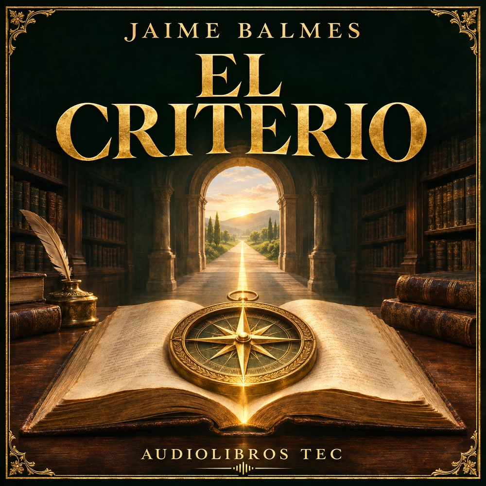

Biblioteca invitada · LibriVox
El criterio
Una invitación a pensar con claridad, prestar atención y tomar decisiones con prudencia. Balmes explora cómo distinguir lo que sabemos, evaluar testimonios y orientar nuestras acciones.
- Español
- 8 h 34 min
- 27 pistas
Escucha completa gratuita
Ahora escuchas
Cap. 1 · Consideraciones preliminares
Narración: Odal
Preparando capítulos…
El avance se recuerda en este navegador. Necesitas conexión para escuchar.
Audio de LibriVox, alojado en Internet Archive. Narradores: Odal y mpinedag. Portada y selección: Audiolibros TEC.
A tu ritmo
Elige un capítulo
Los capítulos más largos están divididos en varias pistas.
¿El audio no carga?
Prueba de nuevo con Reproducir. También puedes usar el reproductor original sin salir de esta página.